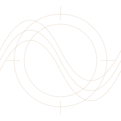
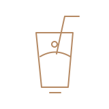

A PROPOSED DIRECTION
Many cravings.
One idea.
An independent design concept built around the savoury and sweet range in CreamCrust’s public menu.


ORIGINAL ZENVAR CONCEPT ARTWORK
THE CONCEPT
Room for
both sides.
Public listings bring together fried chicken, burgers and sandwiches with waffles, sundaes, shakes and falooda. That contrast is the starting point for this visual direction.
The founding story, team details and café photography remain unverified. This page presents a design proposal without inventing a business history.
Proposed wordmark, palette and copy by ZENVAR. Owner approval pending.
EXPLORE THE MENU